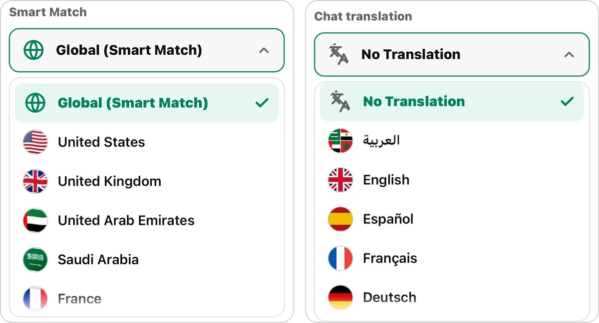

Randly बनाम Ome.tv: 2026 में कौन-सा रैंडम वीडियो चैट बेहतर है?
जानकारी की समीक्षा:
यह तुलना Randly की टीम ने प्रकाशित की है; यह स्वतंत्र रैंकिंग नहीं है। हम अपने कार्यान्वयन की सुविधाओं और OmeTV द्वारा अपनी सेवा के बारे में प्रकाशित जानकारी में अंतर रखते हैं।
देश और रुचि फ़िल्टर प्राथमिकताएँ हैं, तुरंत साथी मिलने की गारंटी नहीं। उपलब्धता भाग लेने वालों पर निर्भर है। टेक्स्ट अनुवाद में गलतियाँ हो सकती हैं; यह लाइव आवाज़ का अनुवाद नहीं है। झंडा इंटरनेट कनेक्शन का अनुमानित स्थान बताता है, नागरिकता या पहचान नहीं। उम्र की पुष्टि से यह सिद्ध नहीं होता कि हर व्यक्ति वयस्क है।
आधिकारिक स्रोत: OmeTV · FAQ · Rules.
हमने तुलना कैसे की
हमने Randly के वर्तमान कार्यान्वयन और ऊपर दिए गए OmeTV के आधिकारिक पृष्ठों की सुविधाएँ देखीं। हमने प्रदर्शन या मॉडरेशन का नियंत्रित तुलनात्मक परीक्षण नहीं किया। उपलब्धता और खाते की आवश्यकताएँ बदल सकती हैं।
- क्या मैं अकाउंट बनाए बिना चैट शुरू कर सकता/सकती हूँ?
- कौन-से फ़ीचर मुफ़्त हैं और किनके लिए पैसे लगते हैं?
- क्या मैं देश चुन सकता/सकती हूँ?
- क्या लाइव ट्रांसलेशन है?
- क्या यह सिर्फ़ वीडियो है, या मैं टेक्स्ट चैट भी इस्तेमाल कर सकता/सकती हूँ?
- क्या यह ब्राउज़र में चलती है, और क्या ऐप ज़रूरी है?
- क्या बुरे यूज़र को रिपोर्ट और बैन करने का तरीका है?
- क्या साइट साफ़ बताती है कि यह सिर्फ़ वयस्कों के लिए है?
रैंडम चैट साइट चुनने से पहले ज़्यादातर लोगों के मन में यही सवाल होते हैं, इसलिए हमने इन्हीं के आधार पर नीचे की तुलना बनाई है।
संक्षिप्त तुलना
| फ़ीचर | Randly | Ome.tv |
|---|---|---|
| कीमत | मुफ़्त, कोई पेड प्लान नहीं, सभी फ़ीचर शामिल | FAQ के अनुसार मुफ़्त वीडियो चैट |
| रजिस्ट्रेशन ज़रूरी | नहीं | FAQ में साइन-इन का विवरण |
| देश का चयन | हाँ, मुफ़्त | देश चुनने की सुविधा सूचीबद्ध |
| मैसेज का लाइव ट्रांसलेशन | हाँ, मुफ़्त, 12 भाषाएँ | FAQ में संदेश अनुवाद सूचीबद्ध |
| वीडियो चैट | हाँ | वीडियो चैट सूचीबद्ध |
| टेक्स्ट चैट | हाँ | वीडियो के साथ टेक्स्ट संदेश |
| रुचि के आधार पर मैचिंग | हाँ | इस समीक्षा में सत्यापित नहीं |
| ब्राउज़र में चलती है | हाँ, ऐप की ज़रूरत नहीं | वेबसाइट और मोबाइल ऐप |
| रिपोर्ट और बैन | हाँ | नियमों में रिपोर्ट और प्रतिबंध का विवरण |
| एंट्री पर उम्र की पुष्टि | हाँ, पहली स्क्रीन पर 18+ का प्रॉम्प्ट | केवल वयस्क; वर्तमान नियम पढ़ें |
Randly में एक बिल्ट-इन XO मिनी-गेम भी है, और यह सब मुफ़्त है।
एक्सेस और कीमत
यह बात सुनने से ज़्यादा मायने रखती है। रजिस्ट्रेशन का मतलब है यूज़रनेम चुनना, जानकारी भरना और इंतज़ार करना, और कई लोग इसी मोड़ पर टैब बंद कर देते हैं। अगर आप पाँच मिनट के लिए रैंडम चैट आज़माना चाहते हैं, तो ऐसी साइट कहीं बेहतर है जो तुरंत शुरू करने दे।
मैचिंग और फ़िल्टर
रुचि के आधार पर मैचिंग से चैट का अहसास भी बदल जाता है। जब आपकी मैचिंग ऐसे व्यक्ति से होती है जिसे वही गेम, संगीत या विषय पसंद हैं, तो आपको शून्य से बातचीत गढ़नी नहीं पड़ती। बात करने के लिए पहले से कुछ मौजूद होता है।
वीडियो और टेक्स्ट चैट
दोनों विकल्प होना व्यवहार में काम आता है। कभी-कभी आप ऐसी जगह होते हैं जहाँ कैमरा या माइक्रोफ़ोन इस्तेमाल नहीं कर सकते, या आप बस टाइप करना पसंद करते हैं, खासकर जब आप कोई भाषा सीख रहे हों। टेक्स्ट चैट होने से ऐसे पलों में भी आप साइट इस्तेमाल कर सकते हैं।
भाषा और ट्रांसलेशन
दोनों सेवाएँ संदेश अनुवाद की सुविधा बताती हैं। Randly में यह टेक्स्ट के लिए है, बोली गई आवाज़ के लिए नहीं। इसे सहायक मानें: छोटे वाक्य लिखें और महत्वपूर्ण अर्थ दूसरे व्यक्ति से स्पष्ट करें।
मोबाइल अनुभव
अगर आप ज़्यादातर फ़ोन से चैट करते हैं, तो सबसे आसान तरीका वही है जिसमें पहले कुछ इंस्टॉल करने या अकाउंट बनाने को न कहा जाए।
सुरक्षा और मॉडरेशन
आप कोई भी साइट चुनें, नियम वही रहते हैं: निजी जानकारी कभी साझा न करें, जो भी आपको असहज करे उसे स्किप कर दें, और याद रखें कि आपकी उम्र 18 साल या उससे ज़्यादा होनी चाहिए।


कौन-सी साइट किस स्थिति में ठीक है?
सबसे अच्छा विकल्प इस पर निर्भर करता है कि आप रैंडम चैट से क्या चाहते हैं। इसे समझने का एक आसान तरीका यह है:
- आप इसे अभी, बिना किसी सेटअप के आज़माना चाहते हैं। Randly बेहतर है, क्योंकि आप बिना अकाउंट के गेस्ट के तौर पर शुरू कर सकते हैं।
- आप कोई भाषा सीखने का अभ्यास करना चाहते हैं। 12 भाषाओं में मुफ़्त लाइव ट्रांसलेशन और टेक्स्ट चैट Randly को भाषा के अभ्यास के लिए आसान बनाते हैं।
किसी भी साइट पर बेहतर चैट के लिए टिप्स
कुछ आदतें किसी भी रैंडम चैट साइट पर अनुभव बेहतर बनाती हैं:
- सिर्फ़ “हाय” से नहीं, किसी असली सवाल से शुरुआत करें। “आजकल आपको किस चीज़ का शौक है?” जैसा कुछ बेहतर जवाब दिलाता है।
- जब फ़िल्टर उपलब्ध हों, उनका इस्तेमाल करें। देश या रुचि की मैचिंग आपको बार-बार स्किप करने से बचाती है।
- किसी बदतमीज़ व्यक्ति की बात को दिल पर न लें। उसे स्किप करें, नियम तोड़े तो रिपोर्ट करें और आगे बढ़ जाएँ।
- अपनी निजी जानकारी गोपनीय रखें, भले ही बातचीत दोस्ताना लगे।
किसी भी रैंडम चैट साइट के लिए सुरक्षा टिप्स
आप कोई भी साइट इस्तेमाल करें, कुछ आदतें आपको ज़्यादा सुरक्षित रखती हैं:
- अपना पूरा नाम, पता, स्कूल, कार्यस्थल या फ़ोन नंबर कभी साझा न करें।
- अजनबियों के भेजे लिंक पर क्लिक न करें।
- जो भी आपको असहज करे, उसे स्किप या रिपोर्ट करें।
- याद रखें कि कोई भी अपनी स्क्रीन रिकॉर्ड कर सकता है।
- रैंडम चैट में मिले लोगों को पैसे या तोहफ़े न भेजें।
Randly किसे चुनना चाहिए?
- जो लोग बिना अकाउंट के तुरंत शुरू करना चाहते हैं
- जो कोई भी मुफ़्त देश चयन और ट्रांसलेशन चाहता है
- जो लोग ऐप इंस्टॉल करने की जगह ब्राउज़र इस्तेमाल करना पसंद करते हैं
- जो लोग वीडियो चैट और टेक्स्ट चैट, दोनों एक ही जगह चाहते हैं
- जिन्हें रुचियों के आधार पर मैच होना पसंद है
- भाषा सीखने वाले, जो दूसरे देशों के लोगों से चैट करना चाहते हैं
क्या Randly मुफ़्त है?
हाँ, वीडियो और टेक्स्ट चैट मुफ़्त हैं, कोई छिपी फ़ीस नहीं है। कोई पेड प्लान नहीं है।
क्या Randly इस्तेमाल करने के लिए अकाउंट चाहिए?
नहीं। आप गेस्ट के तौर पर तुरंत चैट शुरू कर सकते हैं।
क्या मैं Randly अपने फ़ोन पर इस्तेमाल कर सकता/सकती हूँ?
हाँ, यह मोबाइल ब्राउज़र में चलती है, ऐप डाउनलोड करने की ज़रूरत नहीं।
क्या Randly सिर्फ़ वयस्कों के लिए है?
हाँ। Randly सिर्फ़ 18+ के लिए है, और पहली स्क्रीन पर एंट्री से पहले आपसे उम्र की पुष्टि करवाई जाती है।
क्या Randly Omegle का विकल्प है?
हाँ। हमारी सबसे अच्छे Omegle विकल्पों की गाइड देखें।
निष्कर्ष
अगर आप कंट्री फ़िल्टर और ट्रांसलेशन के साथ मुफ़्त, बिना रजिस्ट्रेशन वाला अनुभव चाहते हैं, तो Randly आज़माकर देखें।